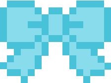
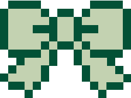

About Me
Hi, I'm Sara! Thanks for visiting my website.
- UC Berkeley Class of 2026. Go Bears! üêª
- Computer Science & Data Science double major üíª
- Incoming Software Development Engineer intern at Amazon üíò
- Currently interning at SwingVision, an award winning AI app for tennis üéæ
- 2024 Women in Sports Tech, Inc. Fellow üß°
Professional Interests
Sports Tech:
- Since high school, I've always been interested in the applications of technology in sports, especially for tennis.
Computer Science and Data Science:
- I never coded before I came to Berkeley, but because of my interests in sports tech/analytics, I decided to start as a Data Science major.
-
A year into my studies, I found that I really enjoy
building things thatdo something , so I decided to add a Computer Science major as well! - I'm intrigued by applications in both fields, and I haven't decided yet which field I enjoy more.